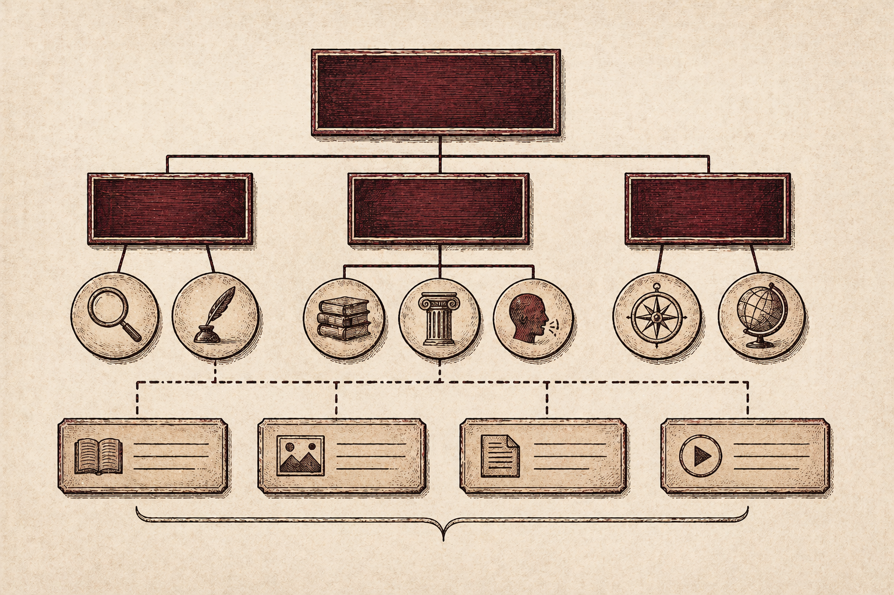

Part Three
Structural Models: Hierarchy, Facets, and Rhetorical Choice
Once the rhetorical stakes of classification are established, the question becomes: which structural models produce what kinds of meaning, and for whom? A case study of a complex Italian healthcare website reveals both the limits of hierarchy and the possibilities of faceted alternatives.
The Rhetoric of Hierarchy
Hierarchical organization structures knowledge through parent-child relationships that determine what is general and what is specific, what is primary and what is subordinate. This is not a neutral ordering. Hierarchy encodes a particular interpretive logic, assigning meaning by position. Content placed high in a hierarchy is implicitly more important or general, while content buried in subsections is implicitly specific, secondary, or difficult to reach.

Ruzza et al.'s study of an Italian healthcare organization's institutional website illustrates the consequences when an organization attempts to manage complex, heterogeneous content through a purely hierarchical structure. Users complained that "paths to information are too long" and navigation was "not intuitive." Internally, the web team observed that related content was separated across different branches of the hierarchy, creating organizational inconsistencies "among users both inside and outside the organization."
The hierarchy imposed a single interpretive logic on content that resisted that logic. Users experienced the mismatch as confusion rather than mere inconvenience, a breakdown not just in efficiency, but in their ability to interpret the system's organization at all.
Faceted Classification: Distributing Interpretive Control
What Ruzza et al. propose in response is not a rejection of hierarchy but a hybrid model that pairs a strict hierarchical structure for stable institutional content with a faceted classification system for dynamic content like news, updates, and announcements.
In faceted classification, each unit of content is associated with multiple metadata categories and can therefore appear in different indexes, supporting multiple navigational pathways simultaneously. The crucial design innovation in their model is what they call a “two-way correspondence between specific pages in the hierarchy and specific metadata categories,” in which news content tagged with a given metadata category automatically surfaces on the corresponding hierarchical page.
Rhetorical Significance of Faceted Structures
The rhetorical significance of this hybrid model goes beyond efficiency. Faceted classification distributes interpretive control. Rather than imposing a single pathway through which users must approach a topic; as strict hierarchy does, faceted structures allow users to construct their own navigational sequences based on their particular needs, questions, or contexts.
A healthcare professional seeking information on salmonella might approach through the disease pathway, the disease surveillance data pathway, or the regional outbreak news pathway. Each route yields a different configuration of content, foregrounding different relationships. This is not value-neutral. It represents a design philosophy that accommodates interpretive plurality rather than encoding a single authoritative view.
The Limits of Faceted Models
At the same time, Ruzza et al.'s model is not without its own structural constraints. Faceted classification, they acknowledge, "is based on predetermined hierarchies of facets and controlled vocabularies; consequently, they cannot be used to manage heterogeneous or ambiguous information." The metadata categories must be defined in advance, and those definitions encode organizational priorities.
The system's interpretive flexibility is real but limited. Users can navigate across multiple paths, but only along the paths the architecture makes available. This is a reminder that no structural model is rhetorically innocent. Every IA encodes a perspective on what knowledge matters and how it relates to other knowledge. The choice between models is itself a rhetorical choice.
Design Implications
The case for hybrid structural models is not just practical. It is rhetorical. A system that accommodates multiple navigational pathways is one that acknowledges the plurality of its users' needs and interpretive contexts. A system that imposes a single hierarchy is one that encodes a single, often implicit, organizational viewpoint.
Designers who understand this can make more deliberate choices about which content benefits from fixed hierarchical placement and which benefits from faceted flexibility. The next section examines what happens when these structural decisions fail, and how usability and trust collapse together.